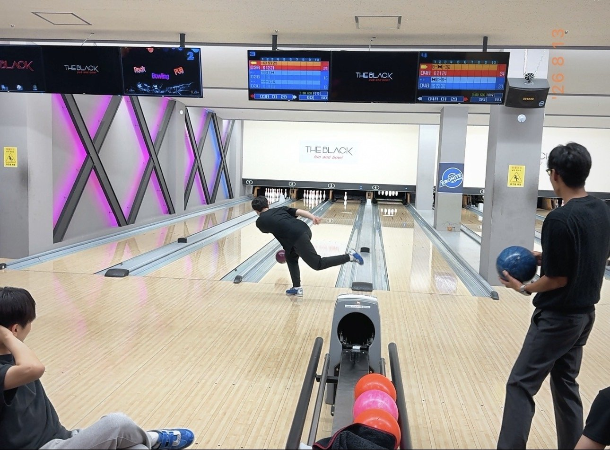

Weekly Drinking Promotion
Association (WDPA)
입력 : 2026년 8월 13일

김성민 해외지부 운영총괄 텍사스 출국 전 핵심 운영진 볼링 회동 현장 / 사진=WDPA
김성민 해외지부 운영총괄의 텍사스 출국을 앞두고 진행된 매주술권장협회 핵심 운영진의 특별 송별 일정이 1차 만찬에 이어 본격적인 체육 프로그램으로 확대됐다.
13일 협회 관계자들에 따르면 허근영 전무이사, 정철현 감사, 김성민 해외지부 운영총괄, 송병완 상무이사, 최민규 상근부회장은 동천동 황소고집에서의 공식 만찬을 마친 뒤 곧바로 다음 장소로 이동하지 않고 인근 지역을 천천히 걸으며 소화 및 알코올 농도 안정화를 위한 야간 산책 프로그램을 진행했다.
충분한 산책으로 체내 컨디션을 재정비했다고 판단한 운영진은 이후 인근 실내 종합 레인 스포츠센터, 통상 ‘볼링장’으로 불리는 시설로 이동해 2차 일정을 시작했다.
이날 경기는 허근영 전무이사·정철현 감사가 한 팀을 이루고, 김성민 해외지부 운영총괄·송병완 상무이사·최민규 상근부회장이 상대팀을 구성하는 2대3 방식으로 진행됐다.
수적 우위는 김 총괄·송 상무이사·최 상근부회장 측이 확보했다.
그러나 경기가 시작되자 숫자는 큰 의미가 없었던 것으로 전해졌다.
특히 협회 내부에서 평소 ‘알코올 섭취 이후 볼링 능력치가 오히려 상승하는 특이체질’로 분류돼 온 허근영 전무이사가 이날도 높은 수준의 경기력을 선보이며 초반부터 레인을 장악했다.
허 전무이사는 1차 일정에서 상당량의 고기와 주류를 섭취했음에도 투구가 거듭될수록 오히려 집중력과 제구력이 안정되는 모습을 보였다.
협회 관계자는 “일반적으로 음주 이후에는 신체능력 저하가 예상되지만 허 전무이사의 경우 볼링에 한해 정반대의 현상이 반복적으로 관측되고 있다”며 “현재까지 명확한 과학적 원인은 규명되지 않았다”고 설명했다.
여기에 정철현 감사까지 안정적인 투구 능력을 선보이면서 2인조의 경기력은 더욱 강해졌다.
반면 인원수에서 우위를 점했던 김성민·송병완·최민규 3인조는 경기 초반부터 예상보다 큰 점수 차를 허용했고, 끝내 이를 뒤집지 못하며 처참한 패배를 받아들여야 했다.
한 참석자는 “처음 팀을 나눌 때만 해도 3대2라서 유리하다고 생각했다”며 “경기가 시작되고 얼마 지나지 않아 사람 수가 중요한 종목이 아니라는 사실을 깨달았다”고 말했다.
다만 패배팀에서도 예상하지 못한 성과가 발견됐다.
이날 핑크색 볼링공을 주력 장비로 선택한 송병완 상무이사가 상당한 수준의 제구력을 선보이며 새로운 볼링 라이징스타로 급부상한 것이다.
송 상무이사의 핑크볼은 화려한 외관과 달리 안정적인 궤적을 유지하며 핀을 공략했고, 투구가 반복될수록 높은 정확도를 보인 것으로 전해졌다.
현장 관계자는 “처음에는 단순히 색깔 때문에 눈에 들어왔다”며 “그런데 계속 원하는 방향으로 들어가는 것을 보고 장비와 선수 간 궁합이 상당한 수준이라는 판단이 들었다”고 말했다.
협회 내부에서는 이날 경기를 계기로 기존 허근영 전무이사 중심으로 형성돼 있던 볼링 권력구도에 송 상무이사가 새로운 변수로 등장할 가능성도 조심스럽게 제기되고 있다.
경기 종료 후에는 사전에 합의된 규정에 따라 패배팀이 승리팀에게 아이스크림을 제공하는 후속 절차가 진행됐다.
하지만 김성민 해외지부 운영총괄, 송병완 상무이사, 최민규 상근부회장 세 사람은 비용을 공동 부담하는 대신 ‘몰빵 가위바위보’를 통해 최종 결제자를 결정하기로 합의했다.
치열한 내부 경쟁 끝에 최민규 상근부회장이 최종 패배자로 확정됐다.
이에 따라 최 상근부회장은 인근 아이스크림 전문 판매시설로 이동해 참석자들이 선택한 상품의 비용을 전액 부담했다.
목격자는 “볼링에서도 패배하고 가위바위보에서도 패배했다”며 “짧은 시간 동안 두 개 종목에서 연속으로 패배하는 보기 드문 경기 운영이었다”고 평가했다.
이 과정에서 최 상근부회장은 평소 건어물에 각별한 애정을 보여온 정철현 감사를 위해 별도의 특별 간식도 준비했다.
최 상근부회장이 선택한 제품은 오징어 다리를 가공한 건어물 제품인 ‘숏다리’였다.
그러나 기대와 달리 제품 개봉 이후 현장 평가는 빠르게 악화됐다.
당초 쫄깃한 해산물의 풍미를 기대했던 참석자들은 예상보다 지나치게 단단한 식감과 소박한 내용물 규모를 확인한 뒤 상당한 실망감을 나타낸 것으로 전해졌다.
한 참석자는 “건어물이라 어느 정도 단단할 것은 예상했다”며 “하지만 식품보다는 건축자재에 조금 더 가까운 강도였다”고 말했다.
특히 건어물 분야에 높은 이해도를 보유한 정철현 감사 역시 해당 제품에 대해 별다른 추가 구매 의사를 나타내지 않은 것으로 알려졌다.
협회 관계자는 “제품명은 분명 ‘숏다리’였지만 내용물까지 이렇게 짧을 필요가 있었는지에 대해서는 내부적으로 아쉬움이 있었다”고 전했다.
이로써 핵심 운영진은 1차 육류 만찬에 이어 2차 스포츠·디저트 프로그램까지 모든 일정을 성공적으로 마쳤다.
그러나 김성민 해외지부 운영총괄의 텍사스 출국 전 마지막 밤을 위한 ‘데프콘 1(DEFCON 1)’급 송별 체제는 아직 종료되지 않았다.
볼링장을 빠져나온 운영진은 다시 한번 장소를 이동해 이날 일정의 마지막 단계에 돌입한 것으로 확인됐다.
〈특집③에서 계속〉